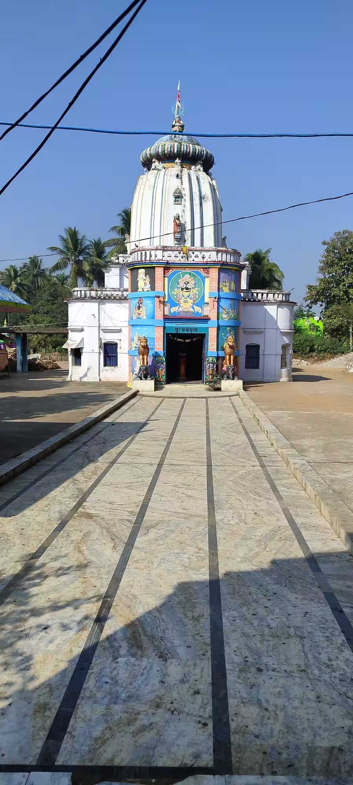

Jai Jagannath
The Jagannath Temple is the main Vaishnava shrine of Nayagarh town and a symbol of the district’s devotion to Lord Jagannath, along with his siblings Balabhadra and Subhadra. It stands about 2 km from the Nayagarh bus stand.
Records attribute the temple to Binayak (Vinayak) Singh Mandhata, who ruled Nayagarh from 1784 to 1825, and place its construction between 1788 and 1808. The same king patronised the court poet Jadumani Mahapatra, and tradition links the temple’s design to the poet’s family.
The Jagannath worshipped in Nayagarh is known as Dadhi Vamana, and local tradition says the image was brought from the temple at Tikiripada.

As across Odisha, Rath Yatra in the month of Ashadha is the main festival. The deities leave the sanctum on decorated chariots, devotees pull them through the streets, and they return after the Bahuda Yatra.
Nayagarh has a chain of old Jagannath temples — at Khandapada, Ranpur, Daspalla, Tikiripada and Sarankul — each tied to a local royal family or village. Visiting a few of them shows how widely the Jagannath cult took root across the hills.
Tap a photo to see it bigger.